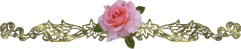

Viết cuốn sách này, tôi muốn chỉ bạn các dùng đầy đủ thì giờ để đạt tới mục đích lớn là sống, sống một cách khác cây cỏ.
Tôi sợ những lời khuyên của tôi có giọng dạy đời và đường đột quá.
Trước khi ngừng bút, tôi không thể không kể qua những nguy hiểm đang rình rập bạn. Nguy hiểm thứ nhất, ghê gớm lắm, là thành một người trong bọn khả ố nhất, khó chịu nhất: bọn thông thái rởm. Anh chàng thông thái rởm là anh chàng lấc cấc, tự cho mình là khôn hơn mọi người. Y là một thành điên huênh hoang phát ghét, tìm được cái gì là xúc động đến nỗi bất mãn vì thấy sao cả thế giới không xúc động như mình. Thành một anh chàng rởm là một điều rất dễ mà cũng rất tai hại.
Vậy khi bạn khởi sự dùng tất cả thì giờ của bạn thì ít nhất bạn cũng nhớ rằng bạn chỉ được dùng thì giờ của mình thôi chứ không phải thì giờ của người khác. Rằng trước khi lập sổ chi tiêu thì giờ của mình thì trái đất vẫn quay đều đều và dễ dàng. Đừng khoe khoang gì nhiều về việc đương làm và đừng tỏ vẻ buồn bả, đau đớn về nỗi hết thảy người đời không biết sống cho ra sống, và nhất định bỏ phí biết bao thì giờ mỗi ngày.
Một nguy hiểm nữa, là bị buộc chặt vào chương trình như một tên nô-lệ bị buộc chặt vào cỗ xe. Chương trình lập ra thì phải theo nhưng không được coi nó như một ngẫu tượng phải thờ. Một chương trình làm việc hàng ngày không phải là một tôn giáo.
Lẽ ấy có vẻ đương nhiên. Vậy mà tôi biết nhiều người mà đời sống là một gánh nặng cho họ, cho người thân và bạn bè chỉ vỉ họ không chịu nhận ra lẽ dĩ nhiên ấy. Tôi đã nghe một bà vợ đau đớn, bực tức nói: "Nhà tôi cứ đúng tám giờ là dắt chó đi chơi, và đúng 9 giờ 15 là đọc sách. Thành thử chúng tôi không thể..." vân vân..Và cái giọng hoàn toàn chán chường trong lời than thở đó cho ta hình dung một bi kịch không ngờ và vô lý trong gia đình ấy. Nhưng, mặt khác, chương trình là một chương trình mà nếu không tôn trọng nó thì nó thành một trò chơi mất. trọng chương trình là một cách vừa phải, sống một cách không quá khắc khổ, mà cũng không thả lỏng quá, là một việc không dễ dàng lắm như những người thiếu từng trải thường tưởng lầm đâu.
Một nguy hiểm nữa, là mỗi ngày mỗi làm vội lên, chưa hết công việc này đã bị công việc khác ám ảnh. Đến mức đó thì đời ta có thể như đời sống trong tù và không phải là của ta nữa. Người ta có thể 8 giờ dắt chó đi chơi mà suốt thời giờ nói là để dạo mát óc cứ phải suy nghĩ về việc 9 giờ 15 phải đọc sách, phải về sao cho khỏi trễ như vậy còn hứng thú gì nữa?
Quyết tâm ngừng công việc lại để tránh cái nguy đó, là một giải pháp vô ích. Nguyên nhân mối nguy đó là tại ta ráng làm nhiều quá, và chỉ có một cách tránh nó là lập lại chương trình, làm bơn bớt đi những cái nghề, càng học, càng ham, và có những kẻ thích hăm hở gắng sức tới nỗi luôn luôn như không kịp thở. Nếu chương trình có vẻ bó buộc quá mà lại không muốn thay đổi thì có một cách là cố ý bình tĩnh bỏ phí bớt thì giờ đi trong lúc công việc này chuyển qua công việc khác.
Nỗi nguy cuối cùng và lớn nhất là nỗi nguy tôi đã chỉ ở một chương trên: bị thất bại từ lúc đầu.
Tôi phải nhấn mạnh điểm ấy.
Một thất bại trong bước đầu có thể diệt lòng ham tu thân luyện trí, nên bạn phải đề phòng từng ly từng tí để tránh nó. Đừng làm nhiều quá. Bước đầu nên rất chậm, có thể chậm một cách quá đáng nhưng phải rất đều đặn.
Và khi đã quyết định làm xong một công việc nào thì dù nó buồn chán đến đâu, cũng phải làm cho xong. Làm được một công việc mệt nhọc, lòng tự tin của bạn sẽ tăng lên.
Sau cùng, khi lựa công việc đầu để làm trong giờ rưỡi buổi tối bạn chỉ nên theo sở thích va xu hướng của bạn thôi.
Được người ta tôn là "pho triết lý đại toàn" biết đi biết đứng cũng thú lắm chứ; song nếu bạn không thích triết lý mà lại thích nghiên cứu về các thứ tiếng động ở ngoài đường chẳng hạn, thì tốt hơn nên bỏ triết lý đi mà theo những tiếng động ngoài đường.
